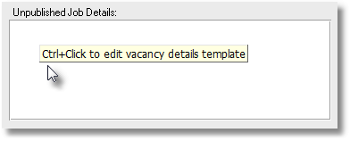

End-to-end recruitment management and information system
PRS Version 8
PRS Version 8 is a major release in terms of user functionality and scalability.
You can install the latest PRS updates from the PRS Updates web page.
What’s new in Version 8
Custom placeholders for message templates
 in version 8.2.0
in version 8.2.0
Message template custom placeholders allow you to create
message templates that will prompt the user for input and insert the
user input into the mail message. For example the custom placeholder
{Please-enter-the-employee-carpark-number} will prompt the user to
Please enter the employee carpark number. The prompt text is the
placeholder name with dashes replaced with spaces.
Add custom placeholders by editing message templates using the PRS Tools→Setup→Message Templates menu command:

When the message template is inserted into an outgoing mail message you will be prompted to enter placeholder values. The placeholder value replaces the placeholder in the outgoing mail message:

Send messages immediately Mail option
in version 8.2.0
The Send messages immediately Mail option forces email messages sent immediately from the PRS irrespective of Outlook settings. If you untick this option messages will be dispatched based on Outlook’s outgoing mail settings.
|
Note
|
This option works with Outlook 2013 and newer. |
Support for custom forms layout
in version 8.1.9
The PRS remembers the on-screen size and location of most resizable forms. This new feature allows you to create your own custom screen layouts which will be restored when the forms are next opened (handy if you have a large high resolution display).
Here’s a thumbnail image of a custom layout on a high resolution (2560 x 1440) display:
If you want to disable this feature, open the Options dialog (using the PRS Tools→Options… menu command) then untick the Remember form locations option on the Appearances page.
To return a form to its default location hold down the Ctrl key while you open it.
Personnel Summary form automatically synced with the Personnel form
in version 8.1.9
The Personnel Summary form is now synchronised with the Personnel form so you can open them both side-by-side and the Personnel Summary will automatically update to display the summary of the person on the Personnel form.
|
Tip
|
The Personnel Summary page will appear blank if the person’s summary has not yet been created — to create a summary for that person press the Candidate Summary button on the Personnel form. |
Support for SMS Gateway API
in version 8.1.8
If you have an Android phone and are subscribed to the PRS SMS option you can now send SMS messages through your phones via a free SMS Gateway API account:
-
Unlike traditional SMS Gateways such as Clickatell the SMS messages go out through your phone so there are no additional messaging charges other than those you normally incur.
-
Because the messages are sent from your phone there are no caller ID blocking issues (traditional SMS Gateways sometimes have blocking issues sending through local carrier networks).
Once you have configured and added your phone(s) to the SMS Gateway API account you can configure the PRS to use the SMS Gateway API.
First, logon as PRS Supervisor (File→Logon→Supervisor menu command) then open the SMS configuration dialog (Tools→Setup→SMS Texting and Phone Calls):

-
Send SMS messages using HTTP Server.
-
Enter your phone’s SMS Gateway API device address.
-
Select SMS Gateway API (https://smsgateway.me/) SMS Service (you will be prompted to enter your account credentials).
New Logging System
in version 8.1.8
The PRS logging system has received a lot of attention:
-
All user transactions are recorded.
-
Lots of new database consistency checks have been added around database updates and deletions — any inconsistencies are logged.
-
All errors reported to the user are logged.
-
When you send us a PRS support email (using the PRS Help→EMail PRS Support… menu command) you have the option to include the latest log file.
-
There’s a new Log viewer: You can view the latest log entries by clicking the View Log button on the Security page of the PRS Tools→Options… menu command (you have to log in as Supervisor to access this function).
Goto Commands reimplemented
in version 8.1.8
To accommodate scaling in large databases we’ve reimplemented the Goto commands and some related Goto List and form Lock/Unlock behaviour — everything still works the same but there are a few subtle differences:
-
When you "Goto" a record the underlying form is filtered to a single target record (use a Find command to locate more than one record).
-
There’s been a minor change to the Lock/Save/Unlock command (F4 shortcut key): If you have unlocked and edited a record then the Lock command saves the record and the Lock turns orange, you can continue editing without having to first unlock the record. As usual, moving to another record automatically saves and locks the form.
-
The F5 shortcut key adds the current record to the Goto List, if the Goto List is not open F5 opens it (same as before). The F5 shortcut also works if the form is in Datasheet View and could be used as an alternative to tagging.
New User-defined Vacancy Activities
in version 8.1.7
We’ve doubled the number of user-definable Vacancy Activities giving you a total of four user-definable activities.
Two new Roster processing tasks
in version 8.1.7
We have added Save client invoice and statement files and Email saved client invoice and statement files Roster tasks. These new tasks save and email Roster invoices and statements in PDF format.

Find people with no assigned skills
in version 8.1.7
A No skills option has been added to the Personnel Find command — it allows you to find personnel that have not had any skills assigned to them.

Second Reference field added to Vacancies form
in version 8.1.7
A second general purpose field Reference 2 has been added to page two of the Vacancies form. It generates Ref2 bookmark for Vacancies document templates and VacancyRef2 for Invoice document templates.

|
Note
|
To enable this feature you need to run the PRS 8.0.6 Shared database Install Wizard and then rebuild the shared PRS database to version 8.0.6 (see Upgrading PRS Shared Data on the PRS website for details). |
New command to import Personnel and Sites from Excel
in version 8.1.6
Using the new Tools→Import→Personnel and Sites from CSV File… command you can import Excel spreadsheet data to create new PRS Personnel and Site records:
Goto List entries retained across upgrades
in version 8.1.6
Modifications have been made to the GoTo list feature in this release to ensure that list entries will not be lost after subsequent PRS Client upgrades.
Revamped Import and Export menus and commands
in version 8.1.6
After adding the new Import CSV File command we:
-
Moved existing import and export commands in the Tools menu into separate Tools→Import and Tools→Export sub-menus.
-
Renamed Tools→Export to Personal Organizer… command to Tools→Export→CSV Files… to reflect its more general use.
Hide rejected and withdrawn candidates on
in version 8.1.6
The behaviour of the Hide rejected candidates checkbox under the Candidate Activities list on the Vacancies form has been changed to Hide rejected and withdrawn candidates:
Candidate Vacancy Rankings
in version 8.1.5
In PRS 8.1.5 we have introduced a Candidate Vacancy Ranking system that makes reviewing and managing per vacancy candidate rankings a breeze.
A three tier ranking can now be applied to vacancy contenders on a per vacancy basis. The color coded rankings are viewable at a glance from the Vacancies form (unranked candidates can be hidden using the Hide unranked candidates checkbox):

Rankings can be assigned when you edit candidate activities:

You can also assign a ranking when you generate a candidate vacancy application from the PRS InBox Tool:

Rankings are also displayed on the Vacancy Activity Manager and Personnel Candidate Activity forms:

|
Note
|
To enable this feature you need to run the PRS 8.0.4 Shared database Install Wizard and then rebuild the shared PRS database to version 8.0.4 (see the PRS website) for details). |
Personnel reports for specific note types
in version 8.1.5
You can now choose a specific note type when printing Personnel reports (either from the Reports→Personnel menu command or the Print button on the Personnel form). If you leave the Note type blank all notes types will be displayed.

This feature allows you to answer questions like “which clients have not been visited for the last six months” — the above example reports all Client Visit notes since March 2014, clients with no reported notes have not been visited. Another example: If you want to see just the last note of a particular type use the Last 1 notes only report option.
New Publication option
in version 8.1.5
There is now an option called Maximum Short Description size which sets the maximum number of characters allowed in the Vacancy Short Description. This is useful if your jobs hosting service restricts the length of job descriptions. To set this option run the PRS Tools→Vacancy Publication menu command then press the Publications Options… button.
Hide rejected candidates from the Candidate Activity list
in version 8.1.4
Rejected candidates can be a distraction when you viewing large numbers of job applicants — you can now hide rejected candidates when viewing Candidate activity on the Vacancies form by ticking the Hide rejected candidates checkbox. This checkbox also hides rejected candidates on the Activity Manager.

Customisable Candidate Summary field names
in version 8.1.4
You can now rename text fields on the Candidate Summary form (hold down the Ctrl and Shift keys and click the corresponding Goto button).

|
Note
|
|
Phone, Email and Web addresses
in version 8.1.4
To reflect today’s phone and Internet communication diversity we have repurposed the five dedicated phone number fields on the Personnel form to accept phone numbers as well as email and Web addresses.
-
All of these fields now accept either a phone number, an email address, or, a Web address (if you have Skype setup for phone dialling then it also recognises Skype names). When you click the corresponding green Goto button the PRS recognises the type of address and then either dials a phone number or sends an email or opens a Web address in the Web Browser.
-
You can change the names for Phone, Email and Web addresses fields (hold down Ctrl and Shift keys and click the corresponding Goto button). For example, if you record candidate LinkedIn pages you could change an unused address field to LinkedIn to remind users that field is for LinkedIn web addresses.
Open Messages in Outlook directly from the InBox Tool
in version 8.1.4
You can now open mail messages directly in Microsoft Outlook from the PRS InBox Tool — hold down the Ctrl key when you click the green Goto button next to the mail message. For example, you can use this feature to forward a message without having to switch back to Outlook.

Redesigned Message Templates user interface
in version 8.1.4
We’ve redesigned the Message Templates user interface (in the PRS Tools→Setup menu) to make it easier to manage lots of templates.
Email Invoice command
in version 8.1.3
We’ve added an Email command to the Invoices form so you can email a copy of the invoice in PDF format directly with just a couple of mouse clicks (if your version of Microsoft is older than Word 2007 the invoice will be sent in Word format, not PDF).
|
Note
|
This command uses the Invoice and Vacancy Invoice Message Templates — to install the default Invoice and Vacancy Invoice templates run the Tools→Setup→Message Templates menu command and then press the Install Defaults… button. |
Email linked document as PDF
in version 8.1.3
The Email Linked Document option now has the option to email Word documents in PDF format (PDF format option requires Word 2007 or newer).

Datasheet View for Personnel Summary form
in version 8.1.3
The Personnel Summary form can now be switched to Datasheet View (use the Window→Toggle Form View menu command or Ctrl+Shift+F).
Emailing Contractor Invoices
in version 8.1.3
It’s now quick and easy to email PDF formatted contract vacancy invoices to your clients. Two new timesheet task options have been added to the Timesheet Tasks command:
-
Save client invoice files which saves the timesheet invoice files in PDF format in the TimeSheets subfolder in the Exports folder (if your version of Microsoft Word is older than Word 2007 then the invoice will be saved in Word format).
-
Email saved client invoice files which emails the saved timesheet invoice files to the client using the Vacancy Invoice message template.

Emailing Contractor Pay Advices
in version 8.1.2
It’s now quick and easy to email contractors PDF formatted pay advices. Two new task options have been added to the Timesheet Tasks command:
-
Save contractor pay advice files which saves the contractor pay advice files in PDF format in the TimeSheets subfolder in the Exports folder (if your version of Microsoft Word is older than Word 2007 then the pay advice will be saved in Word format).
-
Email saved contractor pay advice files which emails the saved contractor pay advice files to the contractors using the Contractor Pay Advice message template.

Email “Reply All”
in version 8.1.2
A Reply All button has been added to the Inbox Mail Message dialog which allows you to reply to all recipients when replying to emails from the InBox Tool.

Linked documents path and file name customisation
in version 8.1.1

When you save a linked document or email attachment the PRS prompts you to save it in the shared documents folder, if you always save to a particular sub-folder you are left with extra mouse clicks to get there. The new Document save folder option eliminates this inconvenience by allowing you to specify your own default document save folder.
The PRS’s file naming convention for saved documents doesn’t suit everyone so we’ve introduced the new Document file name format option which allows you to specify the file naming convention for linked document files that best suits your company.
New delivery option for SMS messages
in version 8.1.1
Ever wished you could send SMS messages from the PRS via your own phone? Our new HTTP SMS delivery option can be configured to work with many and smartphone (and Cloud-based) HTTP gateways — all you need to do is enter the correct server parameters for your chosen gateway in the PRS SMS Texting and Phone Calls dialog.
A smartphone based SMS gateway is an application that runs on your smartphone and accepts SMS messages sent wirelessly from your PC. Cloud-based SMS gateways are hosted on the Internet. The new HTTP server delivery option caters for both. Here is an example of each type:
Example smartphone SMS Gateway
This SMS Gateway app installs a personal SMS gateway server on your Android phone. The PRS sends SMS messages to your phone over the Wireless network, your phone then delivers the SMS message just as if you had entered it manually.
After you have installed and configured the SMS Gateway app on your phone enter these SMS HTTP server parameters from the PRS Tools→Setup→SMS Texting and Phone Calls menu command:
- HTTP send URL
-
http://{address}:9090/sendsms?phone={to}&text={text} - Server address
-
The Server address is set to the IP address of your phone. You can find the IP address of your Android phone by going Settings→WiFi and then selecting Advanced from the menu (this is not available in older versions of Android, look instead in the SMS Gateway app’s HTTP settings).
- HTTP request method
-
GET
Example Cloud-based SMS Gateway
Clickatell’s Cloud-based HTTP SMS Gateway API accepts HTTP requests to send SMS messages. You need a Clickatell API account.
- HTTP send URL
-
https://api.clickatell.com/http/sendmsg?api_id=xxxx&user=xxxx&password=xxxx&to={to}&text={text}Change the xxxx values to your Clickatell account API ID, user name and password.
- Server address
-
Two choices:
-
Leave it blank and set the site-wide Send SMS messages using setting to HTTP server, this applies the HTTP Server delivery method to all users.
-
Or enter a dummy non-blank value to apply the HTTP Server delivery method to this user (irrespective of the site-wide Send SMS messages using setting).
-
- HTTP request method
-
GET
This example is for illustrative purposes — you would be better off using the PRS’s dedicated Clickatell delivery option as it has message tracking features.
Font size Appearance option
in version 8.1.0
You can now increase the size of text in large text boxes from 8pt to 10pt by changing the Font size option on the Appearance page of the Tools→Options… dialog.

Consultant selection by wildcard
in version 8.1.0
Wildcards can now be used in all Consultants with occupation fields in report criteria dialogs. The following example uses the * wildcard character to specify all consultants with an occupation beginning with recruitment:
Added consultant Pay Ref field to Consultant Commissions reports
in version 8.1.0
The consultant Pay Ref is taken from the Timesheet consultant billing records for contract vacancies and from consultant billing records on page 2 of the Vacancies form for non-contract vacancies.
Adjustments for Invoices
in version 8.0.9
A new Adjustments currency field to the Invoice form allows non-billing related charges to be added to an invoice.
-
Contributes to invoice total.
-
Contributes to invoice GST calculation.
-
Does not contribute to billings calculations.
-
Displayed in invoice reports.
-
Exported with invoice data.
-
Bookmarked for invoice templates.
Roster Summary Reports
in version 8.0.9
We’ve added two new Roster reports which summarise outgoings and income by Site and by week and show profit margin percentages. The new reports are accessed by pressing the Print button on the Roster form.


Group Notes by Consultant Occupation
in version 8.0.9
We have added a Consultants with occupation Notes selection option to the Notes reports and Notes Tool. This allows you to search and report on specific recruitment divisions or branches.
You can use wildcards when entering the Consultants with occupation. You can also use wildcards when specifying Note types. In the following example all notes with note type starting with the word Client that were created by consultants with occupation Sales Recruitment NSW will be selected.
Birthday Notifications
in version 8.0.8
We’ve added a Birthdays option to the Personnel Find command — combine it with other search criteria to create birthdays notifications (see the Email/SMS Selected Personnel from the Find Command example below).
Email/SMS Selected Personnel from the Find Command
in version 8.0.8
Ever wish you could Email or SMS your search results directly from the personnel Find command? Now you can using the Email/SMS selected personnel records option that we’ve added to the Personnel Find command.
For example, to send an email birthday greeting to all personnel who have their birthday today:
-
Click the Find command on the Personnel form:
-
Select the Birthday Today option and the Email/SMS selected personnel records option the press the OK button:
-
Select the Email message type; select the Happy Birthday message template; adjust the recipient selection the press Send:

|
Tip
|
You can Email or SMS the results of any search directly from the personnel Find command. |
Email Signatures Catalog
in version 8.0.8
Our new Email Signatures Catalog makes it easy to create and manage HTML email signatures for everyone in your company in one place.
Once you’ve created a Signatures Catalog all PRS users on version 8.0.8 or better will be able to choose from a list of signature names when they send a mail message from the PRS:

Each user can set their default signature under Mail options using the Tools→Options menu command:
Added Consultant Totals to Consultant YTD Billings report
in version 8.0.8
Consultant total billings now appear in the new right-hand TOTAL column of the Consultant Year to Date Billings report:

Non-standard InBox option
in version 8.0.8
The new Non-standard InBox mail option allows you to choose the Microsoft Outlook mail folder used by the PRS Inbox Tool. By default the PRS Inbox Tool loads incoming mail messages from Outlook’s default Inbox folder, most of the time this is fine, but there are situations where it makes sense to use another Outlook folder as the Inbox (for example if your mail is delivered from Google’s Gmail).
New Invoices Statement report
in version 8.0.7
A new Invoices Statement report (PRS Reports→Invoices→Statement menu command) has been added for printing client invoice summaries.

New report Page Break option
in version 8.0.7
Commission and Billings and Invoice reports now have a Page breaks between sections option. When this option is selected report sections will be started on a new page, which allows you to print separate client reports.

Invoice report Status filter
in version 8.0.7
You can now filter invoice reports by invoice status (Paid or Unpaid).
Revamped Contractor Timesheet Tools
in version 8.0.7
Lots of enhancements and additions have been made to the contractor timesheet tools:
-
Unprocessed timesheets are now called draft timesheets instead of new timesheets. It’s only a name change but it makes things a lot clearer. Previously, unprocessed timesheets created by the Tools→Timesheets→New menu command where referred to as “new timesheets” even though they had not yet been processed into the timesheets table.
-
We’ve added a new Tools→Timesheets→Drafts menu command for viewing, editing and processing draft timesheets.
-
The online help documentation for the Timesheet Tools has been revised and expanded to reflect the above changes.
-
You can now enter the Contractor Invoice Number and Billing Units from the Tools→Timesheets→Drafts menu command.
-
You can now delete timesheets opened using the Tools→Timesheets→Go To (Ctrl+Shift+T) menu command.
-
Timesheet tool processing now copies consultant biller records from vacancy to new timesheets.
-
You can now enter the Pay ref entry on the Consultants subform on Page 2 of the vacancies form — this value will be propagated through to new timesheets.
-
Timesheet Tool columns now sort in both ascending and descending modes (previously only sorted ascending).
Six new user customisable publication options
in version 8.0.6
Up to six user customisable publication options can be added to the PRS Vacancy Publication Details form. The following example shows four of the options enabled for the purpose of assigning vacancy publication to SEEK and TradeMe job hosting sites with a Featured tagging option:

The checkboxes are enabled and their worded captions customised by editing the shared prs_data.ini configuration, you can find out how to do this in the PRS Administration Guide. The options are exported in the exported PRS Vacancy files.
|
Note
|
To enable this feature you need to upgrade and rebuild the shared PRS database to version 8.0.2 (see the PRS Changelog for instructions). |
Four additional Mail Data fields
in version 8.0.6
Users of the PRS Mail Data feature will be pleased that we’ve added HomePhone, WorkPhone, OtherPhone and Fax fields to PRS Mail Data, plus Mail Data field names can now be fully customized.
Hide retired sites
in version 8.0.5
A Retired field has been added to the Sites form (bottom right), this allows you to hide inactive sites without having to delete them and lose historical information (similar to the Personnel Retired field). More information can be found in the PRS online help.

Markdown mail option
in version 8.0.5
Markdown is a simple set of rules for formatting text to generate nicely formatted HTML. Although the PRS has always had a Markdown option for composing HTML formatted emails, it has not been very accessible because you needed a different HTML mail signature to use it. We’ve lifted this restriction and added a Use Markdown option to the mail composition form.

Hover the mouse cursor over the Use Markdown checkbox to bring up the Markdown Help tooltip (see above screenshot).
Go to Personnel records from the Document Search Tool
in version 8.0.4
You can now go directly to related linked document records from the Document Search Tool results.
-
If the matched document name is blue then the document is also linked to a Personnel record.
-
You can go directly to the linked Personnel record by holding down the Ctrl key and pressing the adjacent Goto button.
-
Highest scoring documents appear at the top of the list.
|
Tip
|
If the Document Search Tool does not match a linked document to a Personnel record (the document name is black instead of blue), but the document is linked and can be opened, then you can run the Relink Documents command from the File Locations options page. |
Message Merge Tool email address selection
in version 8.0.4
The Message Merge Tool now includes an EMail addresses option that allows you to select any combination of the recipients' EMail and Fax/EMail addresses.
In the following example the email will be sent to the address in the Fax/Email field. If the Fax/Email field is blank it will send the email to the address in the Email field.
Administrator Note creator assignment
in version 8.0.4
The creator of a new note can be altered providing the user has the administrator password. This is handy for organisations where the administration staff enter records on behalf of the consultant.
You can change the PRS colour for Offline Access
in version 8.0.4
You can set the PRS colour when in Offline Access mode using the Tools→Setup→Offline Access… menu command. This serves as a visual cue to remind you that you are viewing a read-only copy of the database (the PRS now displays a different colour by default).
New Client/Candidate Ownership report
We’ve added a new Client/Candidate Ownership report to the PRS Reports menu. This report has many options for selecting and listing client/candidate ownership information.

Revamped Vacancies User Interface
in version 8.0.3
The Vacancies form is now divided into Tabbed pages instead of a single scrolled form.
The Candidate Activity section has been moved to Page 1 because it is the recruitment process’s most viewed and used section.
Page 2 contains vacancy skills, activity, notes, invoicing and billing, and linked documents. The Vacancy type tabs have been moved to a separate sidebar on the right-hand side of the form where they are always visible.

Import Contacts directly from Outlook
in version 8.0.3
Use the new PRS Tools→Import Outlook Contacts… menu command to create new PRS Personnel and Site records from your Outlook Contacts. It checks for duplicate Personnel names and Email addresses and you can edit and select the contacts you want to import.

Set Outlook Reminders time
in version 8.0.3
You can now set the time that PRS Reminders to the Outlook Calendar are scheduled:

Set Top Note text color
in version 8.0.3
You can now customise the color of Top Note text using the new Top Note Color command button to the Appearance tab of the Tools→Options dialog.

Send SMS message as EMail
in version 8.0.3
When sending multiple SMS text messages using Message Merge you now have the option of also sending the message in an EMail.
Timesheet Billing Units
in version 8.0.3
You can now set the contract timesheet units of work on a per timesheet basis:
The default vacancy Billing Units are set in the Contract tab on the Vacancies form.
The selected units are automatically displayed on related invoices:

|
Note
|
To use this feature you will first need to upgrade your shared PRS database (detailed in the PRS Changelog). |
PRS Mail Data
in version 8.0.3
Incoming Email messages containing PRS Mail Data are recognised by the InBox Tool — the data is extracted automatically and can be used to create and update personnel records and process job applications. When a message containing Mail Data is detected the body of the InBox Mail Message is displayed in blue text:

This feature could be used to process job applications sent from your website. The PRS Mail Data formatting conventions are detailed in the PRS Administration Guide.
Posting PRS Reminders to Microsoft Outlook
in version 8.0.2
Tick the Write PRS reminders to Microsoft Outlook Calendar option (Tools→Options menu command):
From now on all new reminders that you create in the PRS:

Will also appear as appointments in your Microsoft Outlook Calendar:

Vacancy and Personnel custom fields
in version 8.0.2
This feature provides a way to add new items of information to Vacancies and Personnel that are not already catered for by an existing field.
Here is an example scenario: on all our contract vacancies we need to record the name of the supervisor to report to (not necessarily the client) plus a client order number. First we need to create a template for the Unpublished Job Details Vacancies field which is where we will record the additional vacancy details.
-
Ctrl+Click on the Unpublished Job Details field in the PRS Vacancies form to enter the template:
 -
Edit the template:

From here on in the template text will be automatically copied into the Unpublished Job Details whenever a new vacancy is created:

This will remind the user to enter the additional information:
Exactly the same technique can be used to add additional Personnel information into the Synopsis field on the Personnel Summary form (click the Personnel Summary button on the Personnel form to open the Personnel Summary form).
User defined Vacancy status
in version 8.0.2
In addition to the standard vacancy statuses you can define up to two additional custom Vacancy statuses. Custom status values are entered on Appearance page of the PRS Tools→Options dialog:
Once set they appear in the Status drop-down list on the Vacancies form:
You can also use the Find command on the Vacancies form to search for vacancies with a user defined status:

View the message that you are replying to
in version 8.0.2
You can view the original message when replying to an email by clicking the View sender’s message link at the bottom of the email form:

Message Merge tool
in version 8.0.1
The Message Merge tool is used to send Email or SMS message en masse to selected candidates and clients. It is fully integrated with the PRS Mail Templates. See our February 2010 newsletter for usage examples.
Maximise long lists to full-screen
in version 8.0.1
The following floating windows can now be resized and maximised to full-screen: Roster Tool, InBox Tool, Messages Tool, Reminders, Unpaid Invoices.
Very handy when working with long lists.
Just click the window maximise button or double-click the window title bar.
Street address Goto buttons
Clicking the Goto buttons next to street addresses on the Personnel and Site forms will display the location in a Google street map.
Smart phone number searches
Ever been handed a phone number and wanted to know who it was that called? You can now search for phone numbers using the Find command on the Personnel and Sites forms. Just enter the number or just the last few digits of the phone number and the PRS will search all the phone number fields, automatically ignoring non-numeric characters such as spaces and dashes.

Search Vacancies by Job Title
A Job Title wildcard search has been added to the Vacancies Find command.
Enhanced and extended Mail Templates
-
Mail Templates can now be used with SMS messages.
-
You now have the option of sending Vacancy Activity messages as Email or SMS.
-
Updating the Filled by field on the Vacancies form now optionally prompts the user to send a customisable Placed message to the candidate; you also get the opportunity to notify the client.
-
The number of Mail Template placeholders has been doubled.
-
A Restore Defaults command has been added to the Mail Templates dialog (Tools→Settings→Mail Templates) — it allows you to add the example mail templates that we have written to your existing mail templates.
Enhanced Consultant Client/Candidates Tool
-
You can now select and reassign just client or just candidates from the Client/Candidates Ownership tool (Tools→Client/Candidates Ownership).
-
The Client/Candidates Ownership tool displays the number of candidates and clients assigned to the consultant.
Messages inclusion in Email replies has been enhanced
-
Instead of being prompted if you want to include the sender’s email (when using the InBox Tool to reply to emails) an Include sender’s message checkbox has been added to the mail message form, it can be selected by default by ticking the Include sender’s message in replies checkbox on the Mail page of the PRS Tools→Options dialog.
-
The sender’s message is added to the end of the mail message after your signature and, in the case of HTML mail messages, is nicely formatted.
Note Types can now be edited
The Tools→Settings→Notes Types command now supports renaming and deleting Note Types.
This feature requires the PRS8 Shared Data upgrade.
Smoother entry of vacancy billing splits
When consultant commissions don’t add up to 100% (on Page 2 of the Vacancies form the PRS generates a red warning message rather than complaining noisily every step of the way.

Mail and Notes archiving
Old mail and notes can be moved from the database to separate archive files, this will both reduce the size of your database and improve Notes and Mail tool performance. Pressing the Options button on the Mail Archive and Notes tools opens a dialog containing commands to Create, View and Restore note and mail archives.
This feature requires the PRS8 Shared Data upgrade.
Other enhancements
-
Vacancy skills and vacancy billers are now copied when you select the Copy current vacancy details option when creating a new vacancy.
-
Notes now open with single click of mouse button.
-
Roster Tool sorts in reverse chronological order.
-
Added the ability to set Document Search folder anywhere in the Documents folder (the indexed documents folder can be specified separately on the File locations page of the Tools→Options dialog).
-
Existing Timesheets and New Timesheets forms now float.
-
Added Source selection option to Mail Messages tool Select command.
-
You can now reply to incoming Email messages that have been saved in the Mail Messages tool (a Reply button has been added to the Received Mail Message form).
-
Summary information has been added to the Vacancy Roster form.
See the PRS Changelog for the full list of the changes and bug fixes since the previous release.
Scalability and Performance
The evolution of the PRS’s integrated Email and SMS messaging capabilities has resulted in dramatically increased usage — nowadays it’s not unusual for archived messages to occupy 90% or more of the database. For example 100,000 mail messages typically occupy around 500MB, 250,000 notes occupy around 100MB with all the remaining data typically occupying less than 60MB.
In late 2008 it became clear that large PRS databases (1000MB or more) needed some way to archive and manage both mail and notes (in order to improve their performance and scalability). PRS version 8 achieves these objectives by splitting mail and notes into separate database files and introducing integrated mail and notes archiving features. These changes are transparent to the user.
The upgrade procedure is documented on the PRS website.
Upgrading to Version 8
Version 8 upgrade FAQ
-
Do I have to upgrade the shared database to use the PRS8 Client?
No, the shared database upgrade from version 7.x.x to 8.0.x is optional, but the following features require an upgrade:
-
Note Types renaming and deletion.
-
The Mail Messages Tool options for creating, viewing and restoring mail archives.
-
The Notes Tool options for creating, viewing and restoring mail archives.
-
-
When should we upgrade our shared database?
Although you don’t need to upgrade your shared PRS 7 database to version 8 to use the new PRS 8 client, larger databases (over 500MB) will benefit (in terms of scalability and performance) from being able to archive old mail and notes. Your shared database size is the size of the
prs2k_data.mdbfile in the PRS Shared Data folder location. -
Will upgrading to PRS8 improve performance?
If you have large numbers of saved mail messages or notes and are finding mail or notes performance is sluggish then archiving old mail or notes will improve performance.
-
How long does the upgrade take?
This depends on the size of you database and network performance. For example, a 600MB database upgraded across a 10/100 Ethernet on an unloaded server took us around 20 minutes.
Version 7 to version 8 database upgrade procedure
-
First check that all machines running the PRS are on version 8 of the PRS Client.
To download and upgrade the PRS 8 Client go to the Installing the Latest PRS Client section on our Updates web page and follow the instructions.
-
Once all users have been upgraded to the PRS 8 Client upgrade the PRS Shared Database to version 8.
To upgrade the PRS 8 Shared Database go to the Installing the Latest PRS Shared Data section on our Updates web page and follow the instructions.